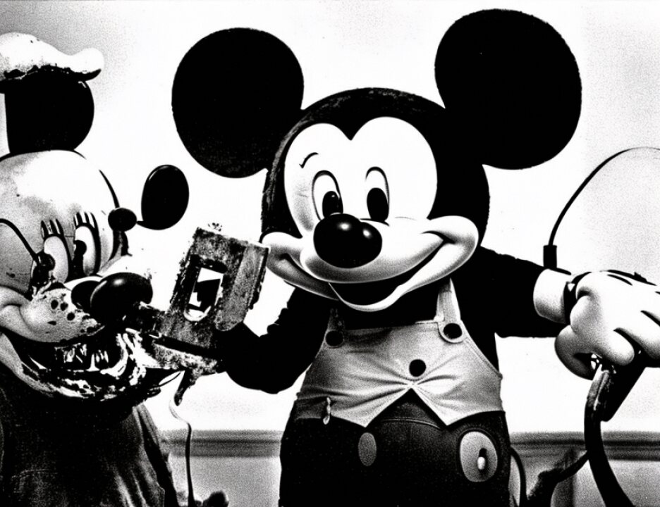

15 Kherchtou is asked by Mr. Schmidt -- and bear this in mind
16 when you think about form over substance -- Kherchtou is asked
17 by Mr. Schmidt, transcript at 1413:
18 "Did you become aware that Harun," Harun, "was
19 involved in false passports or other fraudulent documents?"
20 "Kherchtou: Yes.
21 "Mr. Schmidt: Did you ever see Wadih El Hage
22 involved with false passports?
23 "Kherchtou: No."
24 Kherchtou didn't know. Kherchtou didn't see the
25 letter you saw going back and forth, that Libyan guy in
5905
1 Azerbaijan. There was a wiretap you saw conversations of
2 where Wadih El Hage is involved with a DHL, sending a package
3 and fixing the office and cleaning the green.
4 Wadih El Hage, even Mr. Schmidt seems to concede, was
5 involved with passports when he says, "It doesn't really
6 matter, because that's okay in the third world. Only you
7 suspicious Americans think that's something bad." I submit to
8 you, Kherchtou didn't know as much as you did and you will see
9 that throughout; that you have seen so many different pieces
10 of the puzzle that you now know about particular things more
11 than any one witness. And if Kherchtou wanted to make it up,
12 wouldn't he have just said, yeah, I saw Wadih do passports?
13 But he didn't. He told you what he knew and what he didn't
14 know.
15 Kherchtou told you that he sat in Wadih El Hage's
16 house with Ali Mohamed, a person Abu Mohamed al Amriki,
17 several pictures of him, the guy who did the surveillance, and
18 said that the military commander wanted Kherchtou and Ali
19 Mohamed to go over to Senegal and surveil targets. He never
20 reached. He said Wadih El Hage was present. He was in his
21 house. He could have. Wadih El Hage would be in the area.
22 He doesn't have to worry. But he doesn't.
23 And you will see later that when Kherchtou told you
24 the story about al Fawwaz being arrested, he told you that
25 they paid bribes, they went to a lawyer and they went to a
5906
1 contact in the Kenyan Intelligence Service, a guy named Ali.
2 He never once indicated that Wadih El Hage knew Ali or knew
3 about him. And yet when you look through Wadih El Hage's
4 notebooks you will see later on that Wadih El Hage had an
5 entry in his notebook that said, "Ali from Kenyan Intelligence
6 can help us with the organization." Kherchtou didn't reach.
7 Now, I submit to you the one thing that Mr. Schmidt
8 cannot accept is that Mr. Kherchtou believes but doesn't know,
9 but believes that Wadih El Hage is a member of al Qaeda. And
10 let's talk about form over substance, because it's
11 interesting.
12 On the government's direct examination, I will cite
13 transcript 76. You can check it. Kherchtou is asked right up
14 front:
15 "Do you know if Wadih El Hage made bayat?" He said
2